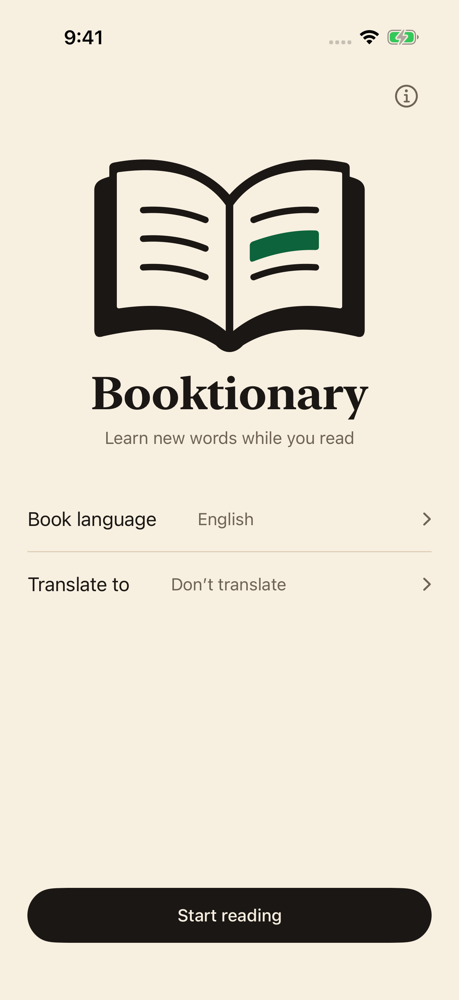
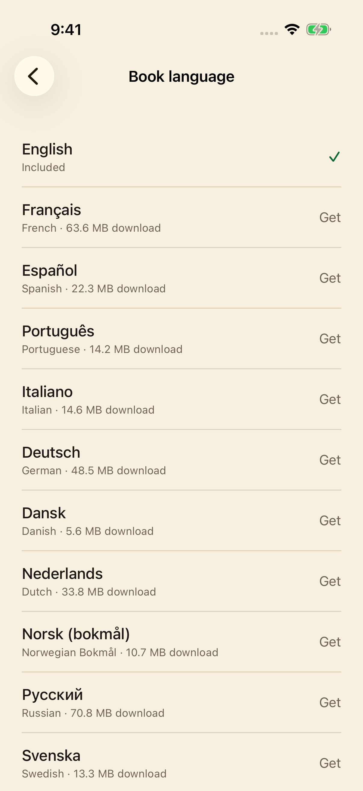

01
Open your book. Open the app.
Choose your book’s language and tap Start reading. You’re ready for the next unfamiliar word.
A little companion for paper books
A new word shouldn’t take you out of a good book. Point your iPhone at the page, find its meaning, and keep reading.
$1.99 USDOne-time purchase. No subscription.
 Less searching. More reading.
Less searching. More reading.A moment of curiosity
No typing. No switching between apps. Just a quick glance, then back to your book.

Choose your book’s language and tap Start reading. You’re ready for the next unfamiliar word.
Hold the small green ring over the word for about a second. A highlight shows it’s been read.

Read the definition, then swipe it away. Your camera is ready when curiosity strikes again.
Choose the language of your book
English definitions are built in. Choose from 23 additional dictionaries and download only the ones you need.
Reading an English book? Choose from 24 separate word translation packs: the 23 downloadable book languages above, plus Greek.
Greek has an interface and English-word translations, but is not a book language. Kurdish covers Latin-script Kurmanji, not Sorani; Malay covers Latin-script Rumi. Chinese supports Simplified and Traditional text. Coverage varies by word, form and language.
27 interface localizations, including Canadian French and Simplified and Traditional Chinese.
All dictionaries and available translation packs are included in your purchase. Installed packs work offline.

The essentials
Installed dictionaries and translation packs work offline, whether you’re on a train or in your favourite reading corner.
Camera images and recognised words stay on your iPhone. No account, advertising, analytics or tracking.
All available dictionaries and translation packs are included. No subscription or in-app purchases.
Yes. English definitions are built in. Download any additional dictionaries or translation packs while you’re online; once installed, they work without a connection. Checking the language catalog also needs internet access.
The 24 book languages are listed above. English is built in; the other 23 dictionaries download separately. Choose the language of your book before reading. Chinese supports Simplified and Traditional text; Kurdish covers Latin-script Kurmanji and Malay covers Rumi.
For English books, choose a separate translation pack into any of the 23 downloadable book languages, or Greek. These are word equivalents, not full-page translations. Coverage varies by word. A dictionary download does not install translations; other book languages show native definitions.
Booktionary requires an iPhone running iOS 17 or later. Good light and a clear printed page help the camera recognise words.
No. Camera images, recognised words and lookups stay on your device. There are no accounts, ads or analytics. Dictionary downloads contact the content host, which can receive connection details such as your IP address.
Questions, bugs, or a word it read wrong: fredddv@hotmail.com
For the love of paper books
$1.99 USDOne-time purchase. No subscription.
For iPhone · iOS 17 or later